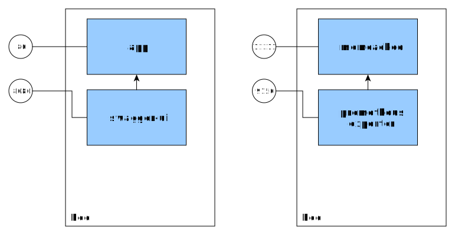

Azure Kubernetes Service

Wojciech Barczynski - SMACC.io i Hypatos.ai
Wrzesień 2018
Wojciech Barczyński
- Lead Software Engineer & System Engineer
- Interests:
working software - Hobby:
teaching software engineering
Background
- ML FinTech ➡ microservices and k8s
- Before:
1 z 10 Indonesian mobile ecommerce (Rocket Internet) - Spent 3.5y with Openstack, 1000+ nodes, 21 data centers
- I do not like INFRA :D
Dlaczego?
- Admistracja jest trudna i kosztowna
- Virtualne Maszyny, ansible, salt, etc.
- Za dużo ruchomych części
- Nie kończąca się standaryzacja
Mikroserwisy AAA!

Dlaczego?
- Chmura jednak $$$
Imagine
Świat
- bez wiedzy o IaaS
- żadnego konfigurowania na nodzie
- mniej dyskusji o CI / CD ...
- Środowisko jak czarna skrzynka
Kubernetes
- Simple Semantic*
- Batteries for your 12factory apps
- Service discovery, meta-data support
- Independent from IaaS provider
Goals
- Utilzie resources to early 100%
- Application and services mindset
Kubernetes
Kubernetes

make docker_push; kubectl create -f app-srv-dpl.yaml
Scale up! Scale down!

kubectl --replicas=3 -f app-srv-dpl.yaml
Scale up! Scale down!

kubectl --replicas=1 -f app-srv-dpl.yaml
How get user requests?
 Ingress Controller
Ingress Controller
Load Balancing

Kubernetes @ Azure
Options
- AKS - managed
- ACS - installation wizard
- Your own installation with Installer
AKS
- GKE for Google
- EKS or Fargate for Amazon
AKS
- Independent from IaaS
- Our OnPrem = Our OnCloud
- Consolidation of our micro-services
- Plug and play, e.g., monitoring
AKS
- You: k8s workers
- Azure: k8s masters
AKS
- You: upgrade your k8s
- Azure: update your kube-system pods, k8s config, and nodes
Azure Updates
Bumpy road ahead
- Kube-Systen pods
- Kubernetes configuration - ☠
- System: on the node restart applied
- System: Memory-preserving updates - ☠
Azure Updates - Nodes
NAME VERSION OS-IMAGE KERNEL-VERSION CONTAINER-RUNTIME
aks-nodepool1-27173880-0 v1.10.3 Ubuntu 16.04.4 LTS 4.15.0-1018-azure docker://1.13.1
aks-nodepool1-27173880-1 v1.10.3 Ubuntu 16.04.4 LTS 4.15.0-1018-azure docker://1.13.1
aks-nodepool1-27173880-2 v1.10.3 Ubuntu 16.04.4 LTS 4.15.0-1018-azure docker://1.13.1
aks-nodepool1-27173880-3 v1.10.3 Ubuntu 16.04.4 LTS 4.15.0-1018-azure docker://1.13.1
aks-nodepool1-27173880-5 v1.10.3 Ubuntu 16.04.4 LTS 4.15.0-1019-azure docker://1.13.1kubectl get nodes -o wide
Azure Updates - K8S
- Scalling down / up your cluster applies the newest k8s config changes
Azure K8S Integration
- Load Balancers
- Persistence Volumes
- Graphic Cards Support
- Authentication with oauth
- Monitoring?
Limits
- No node-pool support
- RBAC?
- No limited centralized logging
- Federation support
Pain points
- Memory preserving updates
- AKS team changes configuration
Annoying
- Slow deletes
- Slow attaching and detaching volumes
- You are not able to delete a pod without
--force
Love
- Openess on github: AKS issues
Create
az aks create --name portal-production \
--resource-group MYCOMPANY \
--node-vm-size 'Standard_D4_v2' \
--node-count 4 \
--generate-ssh-keysCreate
Go to portal
Ready to go!
az aks get-credentials \
-g MYCOMP \
-n portal-prodkubectl get podskubectl get pods -n kube-systemUpdate
Name MasterVersion NodePoolVersion Upgrades
------- --------------- ----------------- --------------------------------------
default 1.10.3 1.10.3 1.10.5, 1.10.6, 1.10.7, 1.11.1, 1.11.2az aks get-upgrades -g MYCOMP \
--name portal-dev -o tableUpgrade
az aks upgrade --name portal-dev\
--resource-group MYCOMP \
--output table \
--kubernetes-version 1.10.3Upgrade
az aks upgrade --name portal-dev\
--resource-group MYCOMP \
--output table \
--kubernetes-version 1.10.3AKS @ SMACC
Setup Azure
- az aks CLI for setting k8s
- Terraform for everything else
TF also sets our AWS
Tech
- Golang dla mikroserwisów
- Python dla wszystkiego Machine Learning
- JS i Emberjs dla webui
- OpenAPI
- ML Pipeline - evaluate kubeflow i patchyderm
Kubernetes
- Pure, generated, kubernetes config
- 2x kubernetes operators
Continuous Deployment
- Github
- TravisCI
- hub.docker.com
- Kubernetes
In spirit similar to the Kelsey Hightower approach
Backup
- Ark
- CronJobs for some components
Environments
| Env | Number of Nodes |
|---|---|
| Prod | 7 |
| Staging | 5 |
| Dev | 4 |
| Tools | 1 |
Summary
- Kubernetes not a silver bullet, but damn close
- AKS the easiest way to start with k8s in Azure
- Still bumpy period - see github issues
Dziękuję. Pytania?
ps. We are hiring.
Backup Slides
0.1 ➡ 1.0
Kubernetes Concepts

Pods
- See each other on localhost
- Live and die together
- Can expose multiple ports

Side-cars
Basic Concepts
| Name | Purpose | |
|---|---|---|
| Service | Interface | Entry point (Service Name) |
| Deployment | Factory | How many pods, which pods |
| Pod | Implementation | 1+ docker running |
Rolling Release with Deployments

Also possible